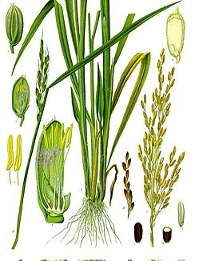

Es un cultivo clave en la agricultura, tanto por su importancia economica como
por su papel en la dieta local
El arroz es muy fundamental en nuestra comunidad ya que es una gran
fuente de ingresos ya que hace fuerte a todos los agricultores porque
la gran mayoria lo plantan y lo cosechan y muchas de estas personas se
sostienen o se mantienen de estos ingresos.
El
arroz es el segundo cereal mas producido en el mundo (741,5 millones de toneladas), por detras
del maiz
(1000
millones de toneladas) y por delante del trigo (713
millones de toneladas).[
El
arroz es uno de los contornos alimenticios mas comunes en el mundo entero. De hecho, se
considera el
alimento con mayor consumo humano,
con base en las estad�sticas
de la Organizacion de las Naciones Unidas para la Alimentacion y la Agricultura.
Por otro lado, el arroz aporta
grandes propiedades y beneficios a la salud del
consumidor. No es de extrañar que su consumo mundial siga en aumento, sobre todo en paises
occidentales.
